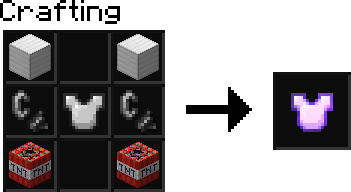

-
Jetpacks
- 
- Hold
SHIFT to accelerate upwards.
- Refuel your jetpack by right-clicking coal. 1 coal for 40 ticks (2 seconds) of flight.
- Absorbs all fall damage. (as long as it has fuel)
-
Fancy One Player Sleep
- One player sleeping in a bed progresses the time to day, with a fancy animation to accompany it.
- The sleeper will be announced in chat.
- Mobs drop their experience orbs on death despite death reason.
-
Pinging

- You can ping anyone in chat just like in Discord, by typing
@name
-
Death Persistence
- Dying no longer resets your health or hunger.
- Dying no longer drops your experience, it now persists after death.
-
God Pets

- Taming an animal now makes them invulnerable to damage.
- Interacting with a tamed animal will tell you it's owner.
- Many, many more features are coming. A lot of them are already created, but not in the server yet.
- Tune into the server (hopefully) every friday for a new patch.
- Look at
#previews in the Discord for sneak peeks.